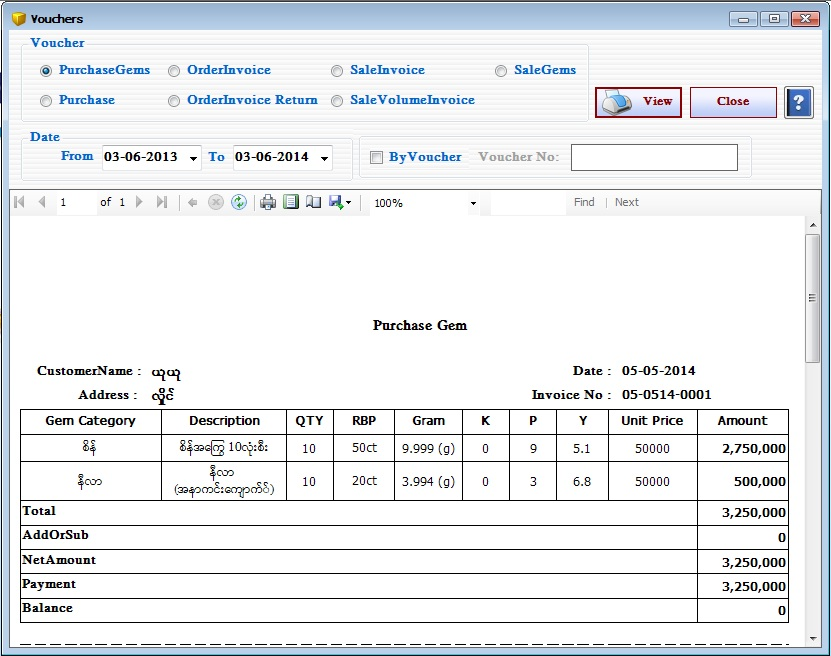

Vouchers Report Setup

- Reports အောက်ရှိ Vouchers Form ကိုဖွင့်ပါ။
- Vouchers Form သည် အဝယ် Voucher ၊ ကျောက်အဝယ် Voucher ၊ အော်ဒါလက်ခံ Voucher ၊ အော်ဒါ ပြန်ရVoucher ၊ Volume အလိုက်အရောင်း Voucher ၊ ကျောက်အရောင်း Voucher နှင့် အရောင်း Voucher များကိုပြန်လည် ကြည့်နိုင်သော Form ဖြစ်သည်။
- မိမိကြည့်လိုသော Voucher အမျိုးအစားကိုရွေးချယ်ပြီး View Button နှိပ်ပါက သက်ဆိုင်ရာ Voucher များအား တွေ့ရမည်ဖြစ်သည်။
- မိမိကြည့်လိုသော Voucher အမျိုးအစားကိုရွေးချယ်ပြီး ByVoucher CheckBox အား on ပြီး ကြည့်လိုသော Voucher နံပါတ်အား Voucher No Text Box တွင်ရိုက်ထည့်ပြီး View Button အားနှိပ်ပါက သက်ဆိုင်ရာVoucher နံပါတ်၏ Voucher အားတွေ့ရမည်ဖြစ်သည်။
- မိမိကြည့်လိုသော From Date နှင့် To Date ကိုရွေးချယ်ပေးရပါမည်။ From Date နှင့် To Date အတွင်း သက်ဆိုင်ရာ Voucher အမျိုးအစားအလိုက် Voucher များအား အစဉ်လိုက်တွေ့ရမည်ဖြစ်သည်။